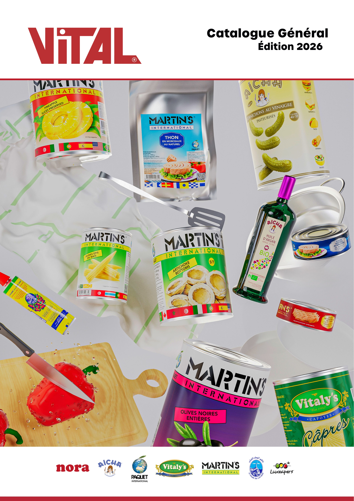
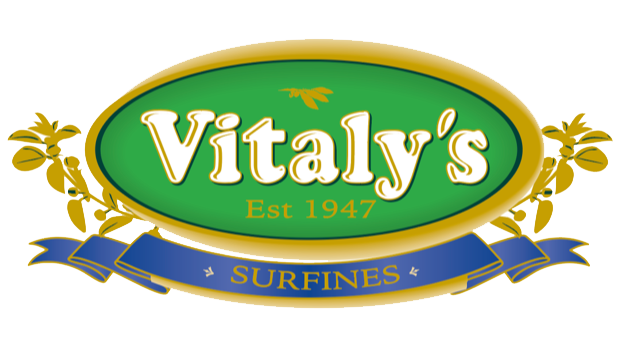
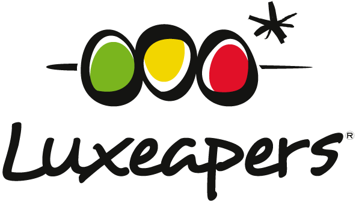
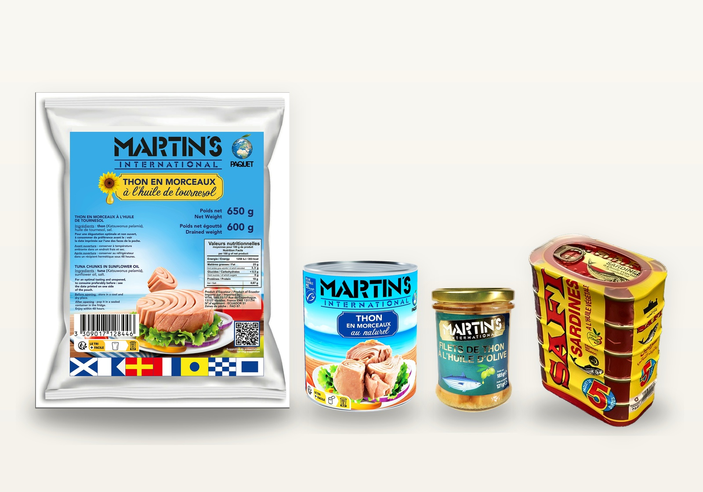
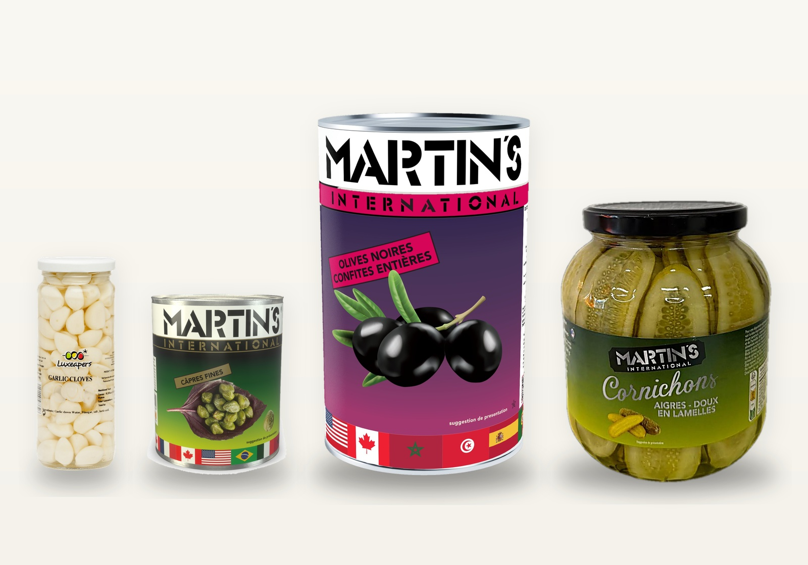
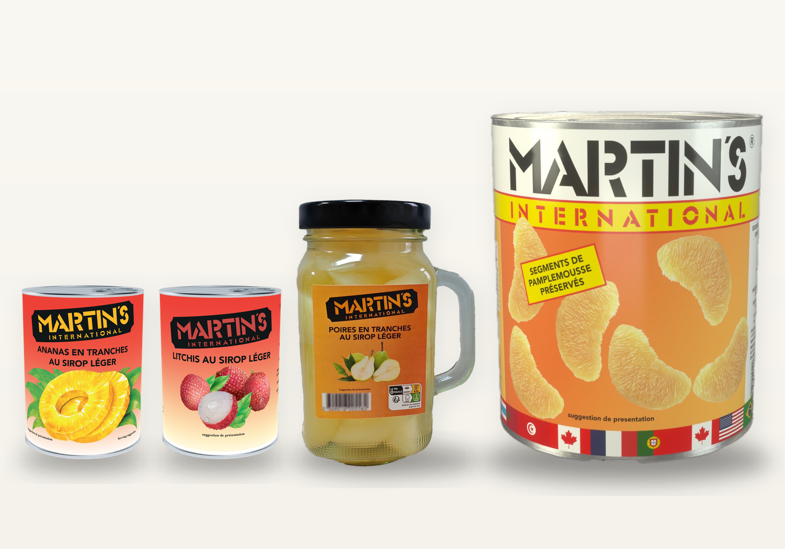
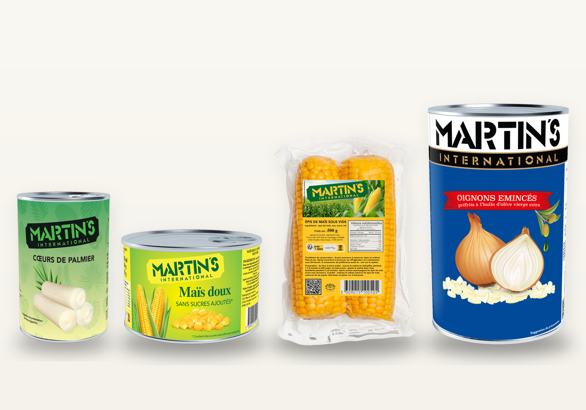
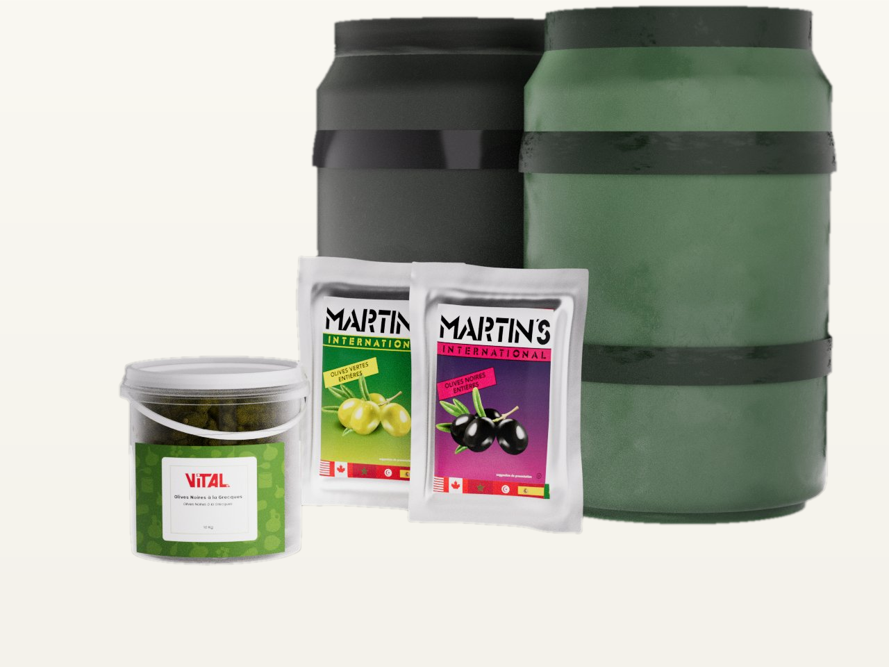
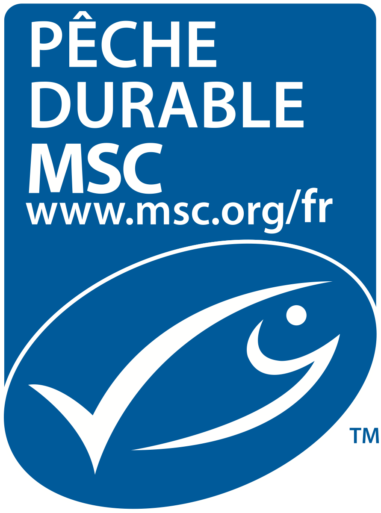
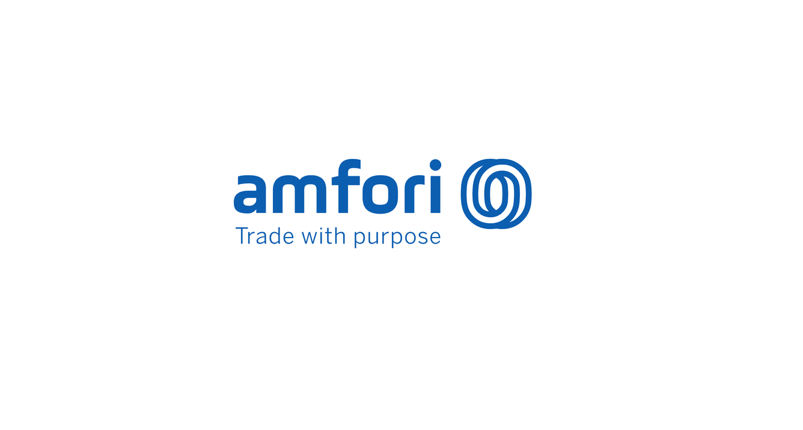

L'expertise du négoce alimentaire, au service des professionnels.
Depuis près de 60 ans, VITAL est un grossiste et importateur incontournable de conserves alimentaires en France. Via notre marque Martin's International nous sélectionnons pour vous les meilleures références : olives, cornichons, câpres, thon, sardines, condiments, légumes, fruits, en conserves et en vrac.

Catalogue 2026

Une sélection rigoureuse, du champ à votre cuisine.
Nous travaillons main dans la main avec des producteurs et des conserveries de confiance, en France comme à l'international, pour vous garantir une qualité constante, une traçabilité totale et des approvisionnements maîtrisés tout au long de l'année.

Produits de la mer
Thon listao, thon albacore, sardine…

Condiments
Olives, câpres, cornichons, poivre vert, ail…

Fruits en conserve
Ananas, litchis, poires, cocktail de fruits, pamplemousse, mandarines…

Légumes en conserve
Artichaut, maïs, cœur de palmier, tomate, oignon, betterave…

Produits en vrac
Olives, cornichons, poivre vert, citrons beldi, ail en saumure, poivrons…
Six décennies d'expertise et de proximité.
Fondée en 1966, VITAL s'est forgée une place de choix dans le paysage français du négoce de conserves appertisées.
Notre force : une sélection rigoureuse, des partenariats durables avec les conserveries, et une parfaite maîtrise des circuits d'import-export.
Au quotidien, nous mettons un point d'honneur à respecter nos engagements, garantir la sécurité de nos produits, et offrir le meilleur rapport qualité-prix à nos clients professionnels.
Trois piliers, une exigence constante.
Sélection qualité
Chaque référence est choisie pour son origine, son goût et sa régularité. Nos cahiers des charges sont stricts et nos partenaires audités.
Traçabilité totale
De la conserverie à votre quai de livraison, chaque lot est tracé. Nous garantissons sécurité sanitaire et conformité réglementaire.
Proximité client
Une équipe à taille humaine, réactive et à l'écoute. Nous construisons des partenariats sur le long terme avec nos clients professionnels.


Au cœur de la Provence, à 30 minutes du port de Marseille, 1 heure du port de Fos-Sur-Mer.
6 000 m² de plateforme logistique à Vitrolles (ZI Les Estroublans), 1 000 containers réceptionnés par an, livraisons France entière et export. Notre emplacement stratégique au pied des ports de Marseille-Fos nous permet de réceptionner des marchandises du monde entier et de les acheminer vers nos clients en flux tendu.
Parlons de vos besoins en conserves alimentaires.
Notre équipe est à votre disposition pour étudier votre demande, vous proposer les meilleures références et bâtir une collaboration durable.
Demander un devis